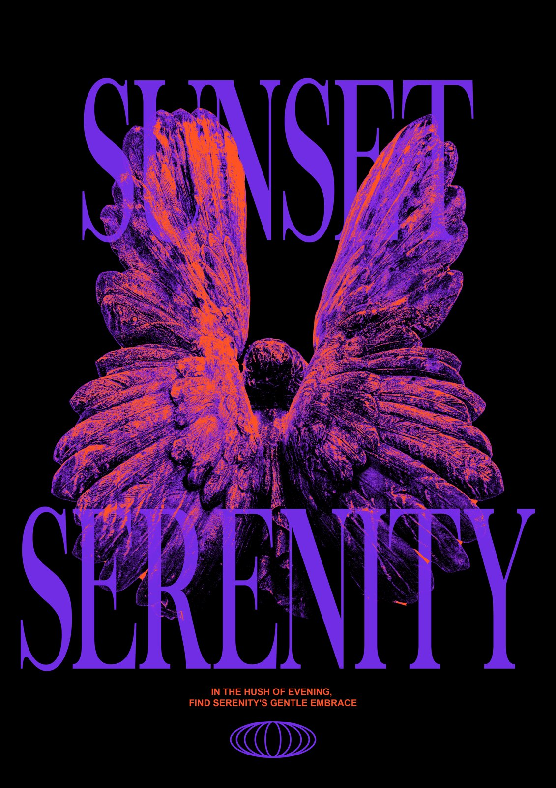
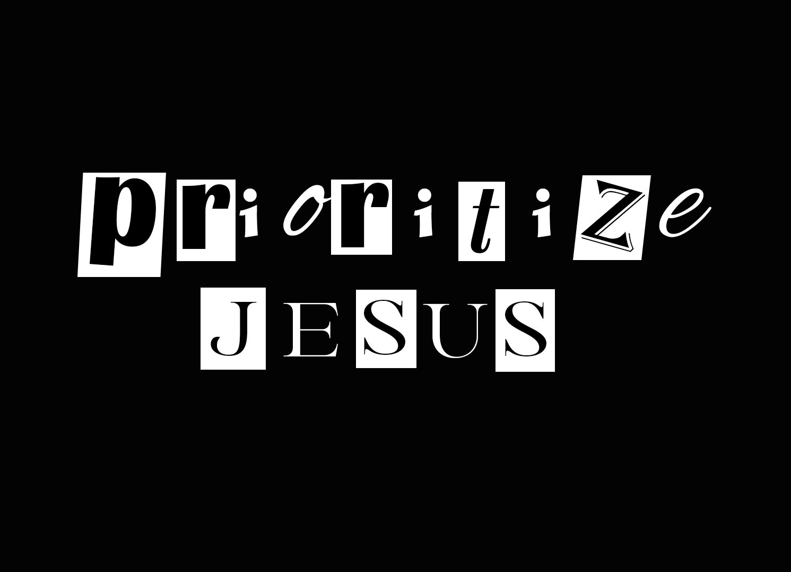

I'm Ruby — a developer and creative designer turning ideas into digital experiences. I build software applications, craft modern websites, and create bold graphic designs that blend functionality, creativity, and visual impact.
A to-do and tracking app for staying on top of incoming tasks and deadlines — currently in development.
Additional projects are in the pipeline and will be added here as they're finished.

A duotone poster built around a weathered statue of angel wings, rendered in deep violet and burnt orange against black. Tall condensed serif type stacks across the wings, paired with a quiet line of copy and a minimal emblem underneath.

A ransom-note-style typography piece spelling out its message in mismatched cutout letters against a stark black background. Mixed serif and sans fonts, uneven spacing, and rough paper-cutout edges give it a raw, hand-assembled feel — designed with poster and T-shirt print in mind.
Building digital solutions and powerful visuals — a developer by skill, a designer by passion.
I work at the intersection of code and creativity. On the development side, I build web and software applications that are clean, functional, and designed to solve real-world problems. On the design side, I create bold graphic designs and visual identities that communicate ideas, connect with audiences, and leave a lasting impression.
This space is where I showcase my work, ideas, and the digital experiences I’m building for the future.